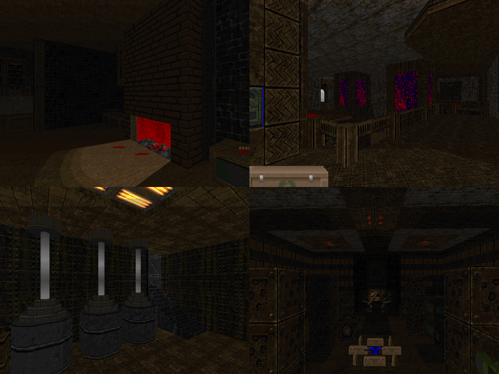

DOWNLOAD LINKS


| Year | 2024 |
| IWAD | Doom II |
| Source port | Boom-compatible |
| Game mode(s) | Single-player |
| Map(s) contributed | MAP02 (with 8 other mappers) |
MAYhem 2024: Exemplary Cadaver is, as the name largely implies, the 2024 edition of the ongoing MAYhem
series of community projects. Led by Obsidian, this year's MAYhem deviated from those of the past with its
premise, which took inspiration from Exquisite Corpse and similar projects. Instead of contributing an entire map,
participants were tasked with crafting a piece of a map in a sort of 3x3 grid in 48 hours. Because of its
nature, 2024's MAYhem ended up being the fraction of the size of past MAYhems at a mere 4 maps.
Myself, I contributed a piece to MAP02 of the set, "Doomguy's Cozy Mansion". I'll leave it up to you to guess which
section of the map is mine, though.